Muscle Memory머슬메모리
A gym log that tells you what to lift next.다음에 몇 kg 들지 알려주는 운동 기록.
Download on the App StoreApp Store에서 받기
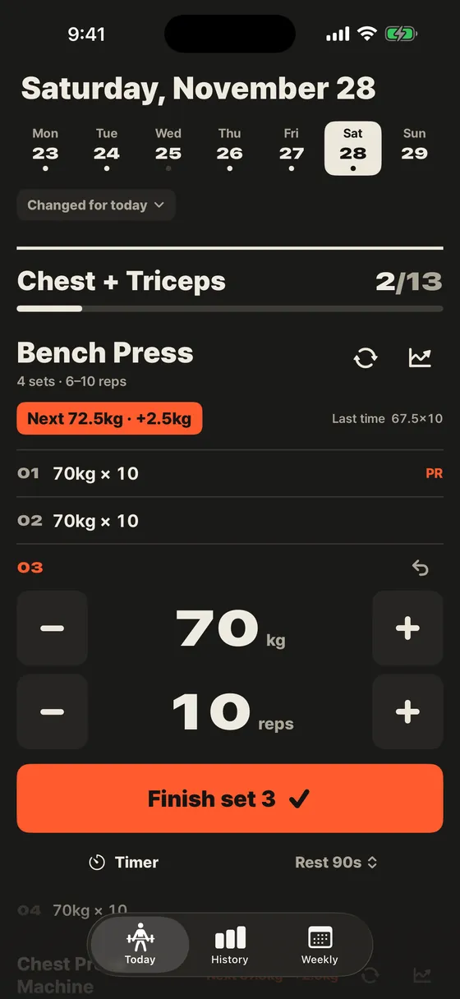
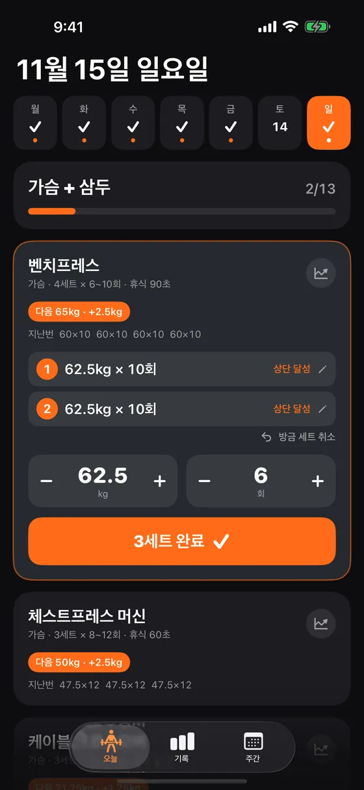
Know what to lift next다음에 몇 kg 들지
It reads your last session and tells you today's weight and reps.지난 기록을 보고 오늘 무게와 횟수를 알려줘요.
- Next weight, filled in다음 무게가 미리
- Hit your target reps on every set and the next session starts heavier. The weight is already in the stepper.모든 세트에서 목표 횟수를 채우면 다음번엔 무게를 올려 둬요. 스테퍼에 이미 들어가 있어요.
- Learns your steps기구마다 다른 증량 단위
- It learns each machine's weight steps from your history. You can also type the weight yourself.기록에서 기구마다 다른 증량 단위를 배워요. 무게 칸을 직접 적을 수도 있어요.
- Available weights가진 무게 설정
- Only have 12 kg dumbbells? Enter 12. At your top weight it suggests more reps instead.덤벨이 12kg뿐이면 12만 적어 두세요. 최고 무게에선 횟수를 늘리라고 알려 줘요.
- New PR, right away신기록은 바로
- When a set beats your past best, a New PR line shows up on the spot.지난 기록을 넘은 세트는 그 자리에서 ‘신기록’으로 알려 줘요.
- Progress chart종목별 성장 차트
- See how every exercise has climbed, session by session.종목마다 무게가 얼마나 늘었는지 한눈에 봐요.
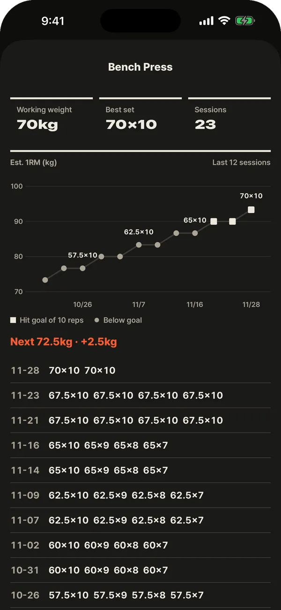
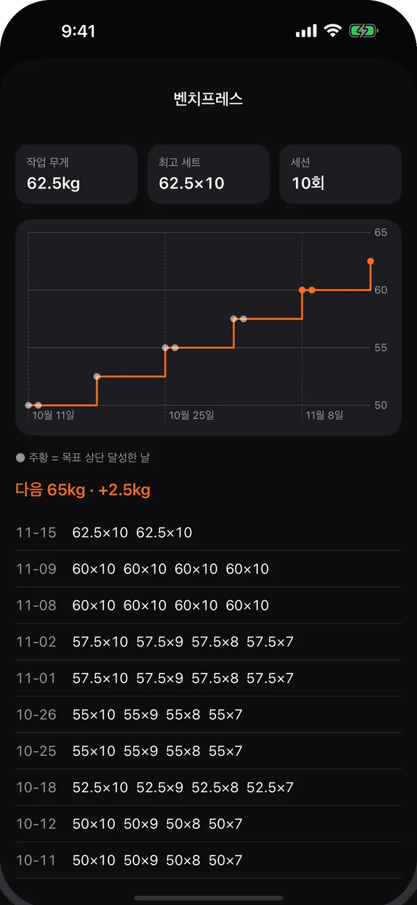
During the workout운동하는 동안
One tap per set. The rest timer starts by itself.세트를 마치면 버튼 한 번, 휴식 타이머가 바로 시작돼요.
- Big rest timer큰 휴식 타이머
- A ring and big numbers, ±15 seconds, and a notification when the rest is over.큰 링과 큰 숫자, ±15초, 끝나면 알림이 와요.
- Minimize the timer타이머 접어 두기
- Fold the timer away to look over your routine. The time left stays in a small bar at the bottom.타이머를 접고 루틴을 봐요. 남은 시간은 아래 작은 막대에 보여요.
- Swap mid-workout운동 중 바꾸기
- Just for today if someone is using the machine, or in the routine too if your gym doesn't have it.누가 쓰고 있으면 오늘만, 기구가 없으면 루틴에서도 바꿔요.
- Treadmill log러닝머신 기록
- Time, speed and incline, a big stopwatch and estimated calories.시간·속도·경사, 큰 스톱워치, 대략 칼로리.
- Undo the last set방금 넣은 세트 취소
- Logged the wrong set? Take it back.잘못 넣은 세트는 바로 취소해요.
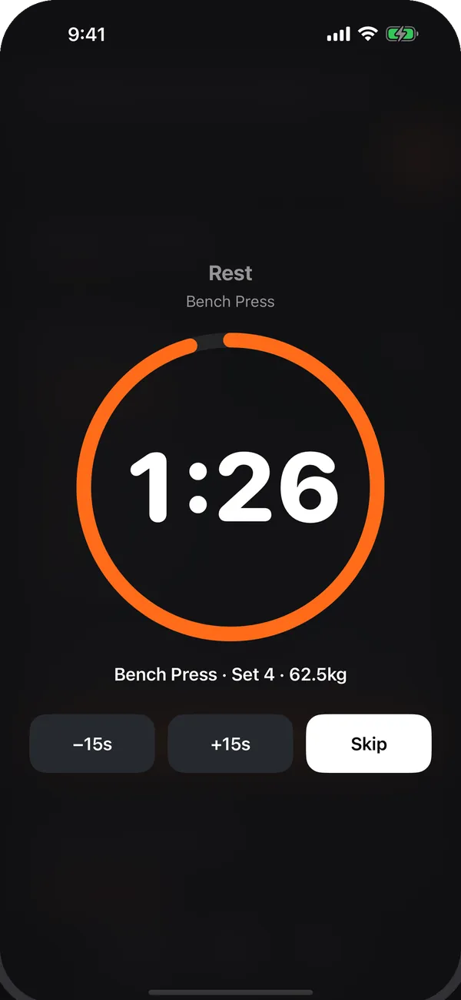
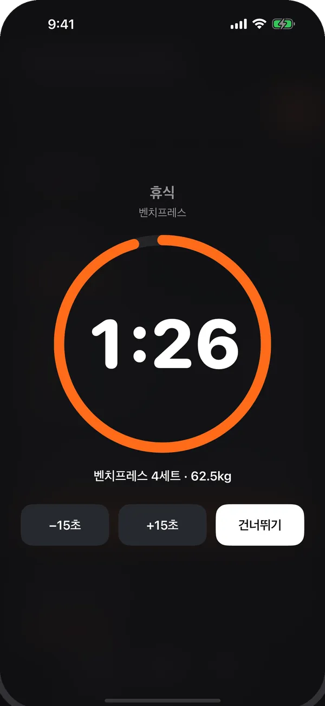
Rest time on the Lock Screen잠금화면에 휴식 시간
Lock your phone between sets and still see the clock.세트 사이에 폰을 잠가도 남은 시간이 보여요.
- Lock Screen and Dynamic Island잠금화면과 Dynamic Island
- The rest timer shows on the Lock Screen and in the Dynamic Island, with the next set underneath.휴식 타이머가 잠금화면과 Dynamic Island에 보이고, 아래에 다음 세트가 나와요.
- When the rest is over휴식이 끝나면
- It turns to Rest over, and the notification still comes.‘휴식 끝’으로 바뀌고, 알림도 그대로 와요.
- Your choice끄고 켜기
- Turn off Rest Timer on Lock Screen in Settings if you only want the notification.알림만 받고 싶으면 설정의 ‘잠금화면에 휴식 타이머’를 꺼요.
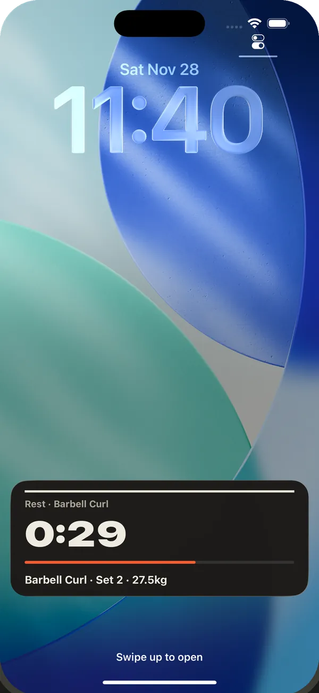
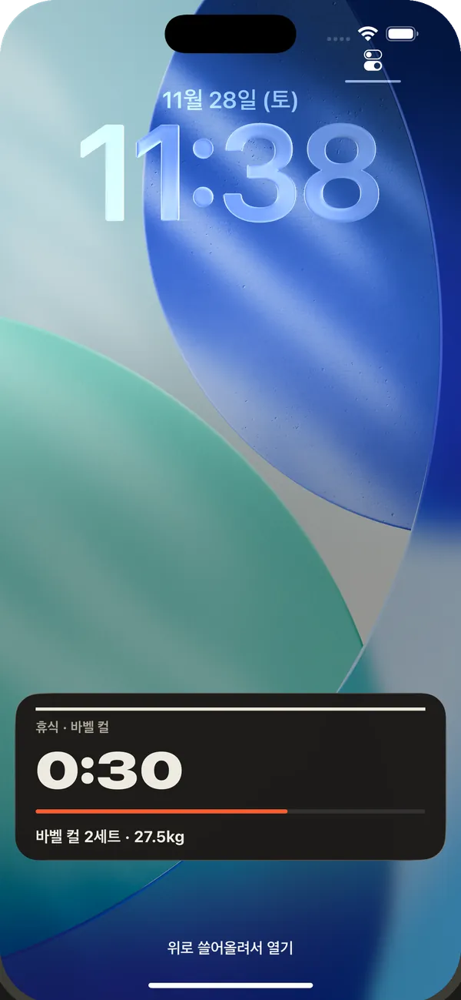
Look back돌아보기
A month calendar of every workout.운동한 날을 한 달 달력으로.
- Month calendar한 달 달력
- Each day shows the muscle groups you trained. Swipe or tap the arrows to change months.날마다 어떤 부위를 했는지 칸에 보여요. 밀거나 화살표로 달을 바꿔요.
- Tap a day날을 누르면
- See that day's exercises and best sets, and open any of them.그날 운동한 종목과 최고 세트가 나오고, 눌러서 자세히 봐요.
- By muscle group부위별
- This month's sets for each muscle group. The ones you've done less of come first.이번 달 부위마다 세트가 막대로 보여요. 덜 한 부위가 위로 올라와요.
- History by routine루틴별 기록
- Your history is also grouped by routine.루틴별로도 기록을 모아 봐요.
- Muscle report부위별 리포트
- 4, 8 and 12-week sets per muscle group, and exercises that have stalled.4·8·12주 부위별 세트 수와 정체된 종목을 알려 줘요.
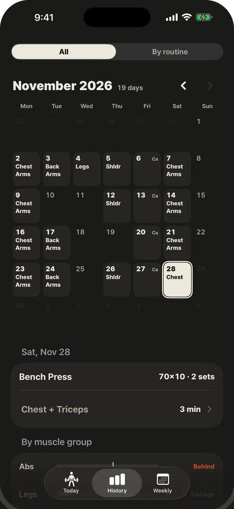
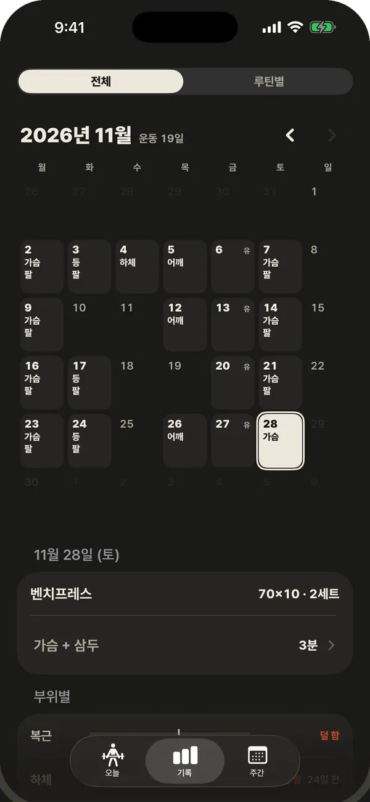
Plan your week일주일을 계획해요
Routines by weekday, built for you or by you.요일별 루틴을 직접 만들거나 추천받아요.
- Weekday-first요일 중심 화면
- Tap a day to see that day's workout.요일을 누르면 그날 운동이 바로 보여요.
- Routine builder루틴 추천
- Pick your days, session length and split to get a weekly plan. It fills empty days only by default.요일, 운동 시간, 분할만 고르면 요일별 루틴을 짜 줘요. 빈 요일만 채우는 게 기본이에요.
- 155 built-in exercises종목 155개 기본 목록
- Search with gym slang and the muscle group fills in for you.‘사레레’ 같은 줄임말로 찾고 부위도 자동으로 채워져요.
- My Gym내 헬스장
- Add the equipment you have once and suggestions use it.있는 기구를 한 번 등록하면 추천에 반영돼요.
- Two workouts a day하루 두 번 운동
- Add a Part 2, like a treadmill run.2부로 러닝머신이나 다른 루틴을 추가해요.
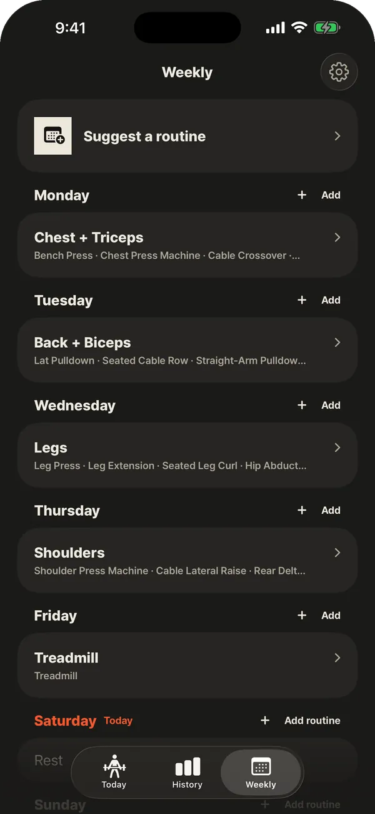
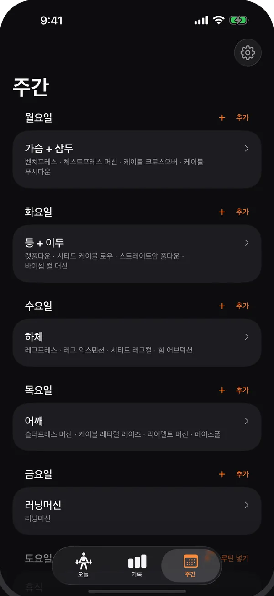
Your records, kept by you기록은 내가 보관해요
No account. Nothing leaves your iPhone unless you save a backup file.가입 없이 바로. 백업 파일을 직접 만들지 않으면 아이폰 밖으로 나가지 않아요.
- Backup file백업 파일
- Create one in Settings and keep it wherever you like, such as the Files app or a message to yourself. Open the file to restore.설정에서 만들어 파일 앱이나 나에게 보내기 등 원하는 곳에 보관하세요. 그 파일을 열면 바로 불러와요.
- Friendly nudges근손실 전에 알림
- A reminder when you skip too many days. You can turn it off.쉬는 날이 길어지면 알려줘요. 끌 수 있어요.
- An app icon with moods표정이 바뀌는 앱 아이콘
- The icon looks worried when you skip more than 3 days.3일 넘게 쉬면 아이콘이 걱정하는 얼굴로 바뀌어요.
- 8 languages8개 언어
- English, Korean, Japanese, Traditional Chinese, German, Spanish, French and Portuguese.한국어·영어·일본어·중국어(번체)·독일어·스페인어·프랑스어·포르투갈어.
- No account, no ads가입도 광고도 없어요
- No sign-up, no tracking, no ads.로그인, 추적, 광고가 없어요.
Questions자주 묻는 질문
How do I change exercises in a routine?루틴의 종목은 어떻게 바꾸나요?
Open the Weekly tab and tap a routine under any day. You can add, remove or reorder exercises and set sets and reps.주간 탭에서 요일 아래 루틴을 누르면 종목 추가·삭제·순서 변경과 세트·횟수 설정을 할 수 있어요.
Can I do a different routine today?오늘만 다른 루틴을 할 수 있나요?
Yes. Open the Today tab, tap another weekday at the top, then use “Change or add today's workout”. It changes today only and your routine stays the same.네. 오늘 탭 위쪽에서 다른 요일을 누른 뒤 ‘오늘 운동 바꾸기·추가’를 누르세요. 오늘만 바뀌고 루틴은 그대로예요.
The machine is busy, or my gym doesn't have it.기구가 사용 중이거나 헬스장에 없어요.
Tap Swap on the exercise during your workout. Choose today only, or replace it in the routine as well.운동 중 그 종목의 ‘바꾸기’를 누르세요. 오늘만 바꾸거나 루틴에서도 바꿀 수 있어요.
How does it choose the next weight?다음 무게는 어떻게 정하나요?
When you hit your target reps on every set, it suggests going heavier next time. It learns each machine's step from your history. If you only have certain weights, such as 12 kg dumbbells, set them under Available weights. At your top weight it suggests more reps instead.모든 세트에서 목표 횟수를 채우면 다음에 무게를 올리라고 알려줘요. 기구마다 증량 단위는 기록에서 배워요. 12kg 덤벨처럼 가진 무게가 정해져 있으면 ‘가진 무게’에 적어 두세요. 최고 무게에서는 횟수를 늘리라고 알려줘요.
Can it build a routine for me?루틴을 대신 짜 주나요?
Yes. Open the Weekly tab and tap Suggest a routine. Pick your days, session length and split. Add your gym's equipment once in My Gym under Settings. By default it fills empty days only, and days that already have a routine stay as they are.네. 주간 탭에서 ‘루틴 추천’을 누르고 요일, 운동 시간, 분할을 고르세요. 설정의 ‘내 헬스장’에 있는 기구를 한 번 등록해 두면 돼요. 기본은 빈 요일만 채우고, 이미 루틴이 있는 요일은 그대로 둬요.
Can I look at my routine while resting?쉬는 동안 루틴을 볼 수 있나요?
Yes. Tap the arrow at the top left of the rest timer to minimize it. The timer keeps running in a small bar above the tabs. Tap the bar to open the timer again.네. 휴식 화면 왼쪽 위 화살표를 누르면 타이머가 접혀요. 타이머는 탭 위 작은 막대에서 계속 돌고, 막대를 누르면 다시 커져요.
The rest timer isn't on my Lock Screen.잠금화면에 휴식 타이머가 안 보여요.
Check that Rest Timer on Lock Screen is on in the app's Settings, and that Live Activities are allowed for Muscle Memory in the iOS Settings app.앱 설정에서 ‘잠금화면에 휴식 타이머’가 켜져 있는지, iOS 설정 앱에서 머슬메모리의 실시간 현황이 허용돼 있는지 확인해 주세요.
Why does it ask for notifications?왜 알림 권한을 묻나요?
To tell you when your rest timer ends and to nudge you on workout days. You can turn nudges off in Settings. Notifications are created on your iPhone; nothing is sent to a server.휴식 타이머가 끝났을 때와 운동하는 날 깜빡하지 않게 알려주기 위해서예요. 운동 알림은 설정에서 끌 수 있어요. 알림은 아이폰 안에서 만들어지고 서버로 보내는 건 없어요.
Is my workout history backed up?운동 기록이 백업되나요?
Your history is stored only on your iPhone and there is no cloud sync. In Settings you can create a backup file and keep it wherever you like. Without a backup file, deleting the app deletes your history.기록은 아이폰에만 저장되고 클라우드 동기화는 없어요. 설정에서 백업 파일을 만들어 원하는 곳에 보관할 수 있어요. 백업 파일이 없으면 앱을 삭제할 때 기록도 함께 지워져요.
How do I move my history to a new iPhone?새 아이폰으로 옮기려면요?
Create a backup file in Settings and send it to yourself. On the new iPhone, install Muscle Memory and open the file. The app checks it and asks before replacing anything.설정에서 백업 파일을 만들어 나에게 보내 두세요. 새 아이폰에 머슬메모리를 설치하고 그 파일을 열면 돼요. 바꾸기 전에 파일 내용을 보여 주고 물어봐요.
Support지원
Something not working? Email us with your iPhone model and iOS version.문제가 있으면 아이폰 모델과 iOS 버전을 같이 적어 메일 주세요.